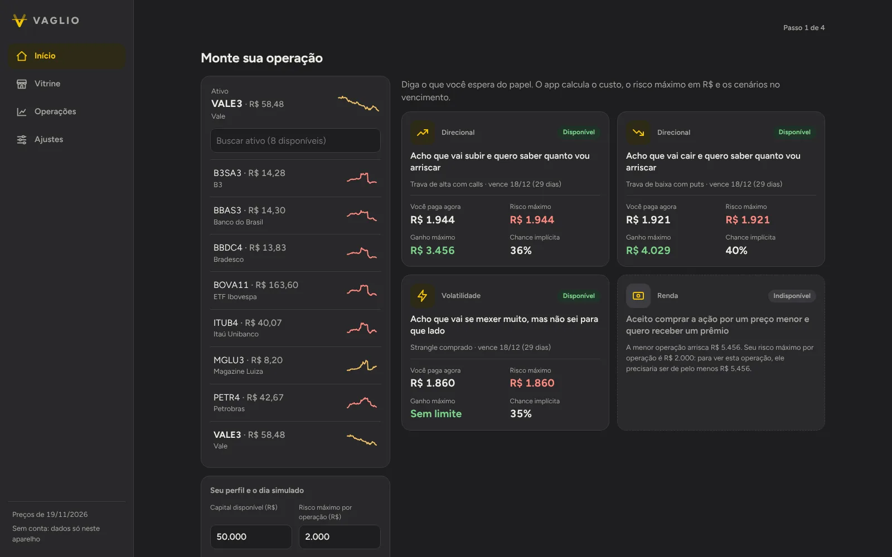
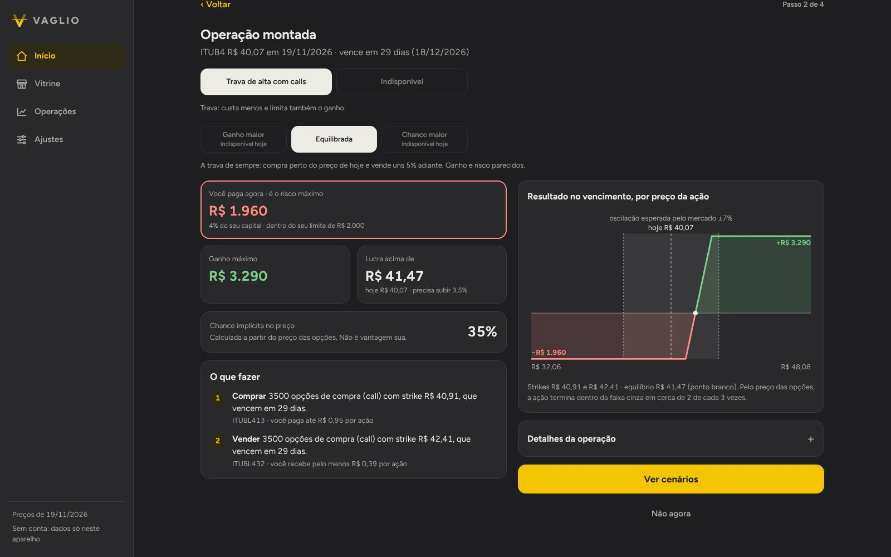
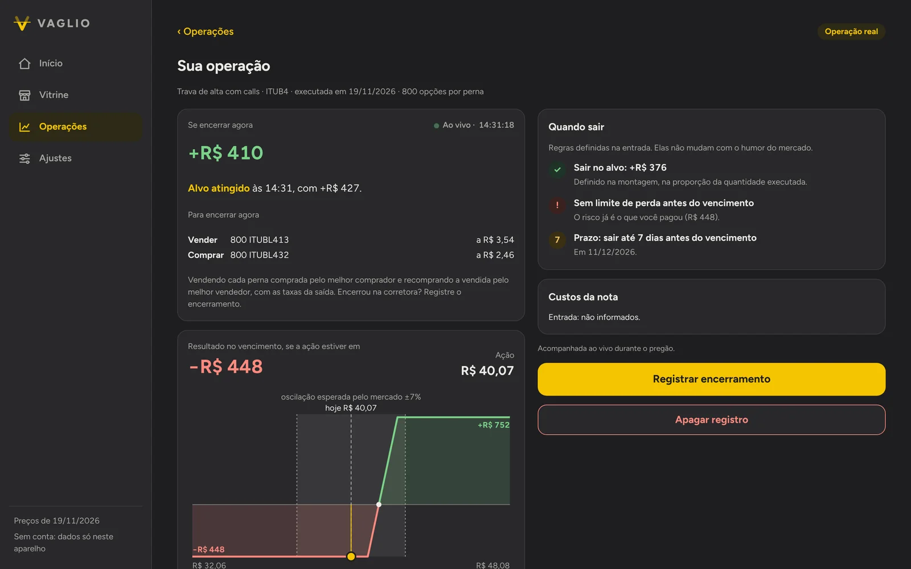
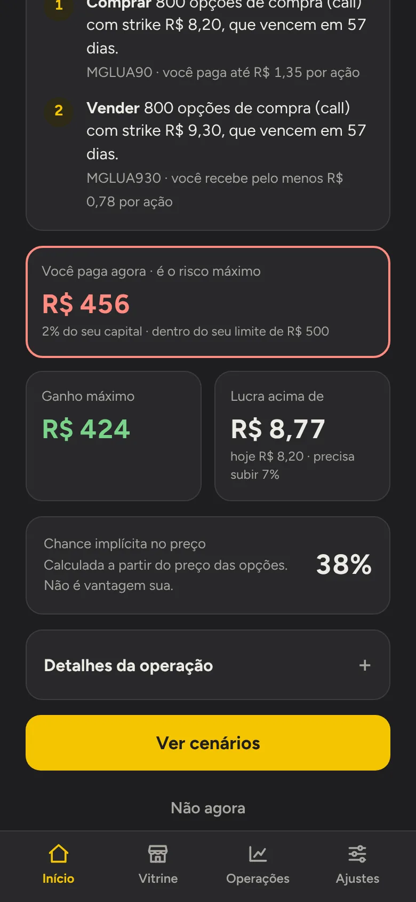

Estratégias com opções na bolsa brasileira.
O Vaglio monta operações com opções de ações a partir do que você espera do papel e do risco que aceita. Antes da ordem, você vê o custo, o risco máximo, o ganho máximo, o ponto de equilíbrio e o que acontece em cada cenário. Depois, acompanha ao vivo e recebe a ordem de saída pronta.
Grátis para começar. Para operar de verdade, a ordem é feita na sua corretora.
operações conferidas com o histórico da bolsa, de 2015 a 2026
risco máximo e ganho máximo em reais, antes da ordem
quanto receberia se encerrasse agora, com aviso na hora da saída

O que é o Vaglio
Uma ferramenta para montar, entender e acompanhar operações com opções. Não é corretora e não recomenda ativo, direção nem momento: a decisão é sua.
Monta
Você diz se espera alta, queda ou movimento forte, escolhe o ativo, o prazo e quanto aceita arriscar. O Vaglio escolhe as opções líquidas que cabem nisso.
Mostra o risco antes
Custo, risco máximo e ganho máximo em reais, ponto de equilíbrio, cenários no vencimento e a chance que o próprio preço das opções indica.
Acompanha
Durante o pregão, quanto você receberia se encerrasse agora, e o aviso quando o alvo, o limite ou o prazo de saída é atingido.
Como funciona
Do que você espera da ação até a operação acompanhada.
Diga o que espera do papel
Subir, cair ou se mexer muito. Você escolhe o ativo, o vencimento e quanto aceita arriscar, em reais.

Veja a operação montada
Quanto paga ou recebe, o risco máximo, o ganho máximo e o ponto de equilíbrio, em três perfis. No Pro, as opções de cada perna e a ordem pronta para a corretora.

Veja o que pode acontecer
O resultado no vencimento para cada preço da ação, com a chance que o próprio preço das opções indica.

Acompanhe ao vivoPro
Registre o que executou na corretora. Durante o pregão, o Vaglio mostra quanto você receberia se encerrasse agora e avisa na hora em que uma regra de saída é atingida, com a ordem de saída pronta.

Imagem ilustrativa, com cotações simuladas.
Vitrine: o que dá para montar hoje
Todas as operações que cabem no seu risco, em 8 ações com opções líquidas na bolsa. Filtre pelo que espera e ordene por risco, chance ou movimento necessário.

Método
Números conferidos com o histórico da bolsa, e nenhuma promessa de resultado.
operações conferidas
Simulamos as operações que o Vaglio teria montado em cada pregão de 2015 a 2026, com os preços de fechamento da B3. A chance mostrada na tela bateu com o que aconteceu, com diferença de poucos pontos.
Preço de execução, não preço médio
"Se encerrar agora" e o desempenho usam o preço que dá para fazer: a venda pelo melhor comprador e a recompra pelo melhor vendedor, com as taxas da saída.
Desconfie de percentual de acerto
Acertar 70% das vezes ainda perde dinheiro se cada erro custa o mesmo que três acertos. O Vaglio mostra quanto ganha quando dá certo e quanto perde quando dá errado, antes da ordem.
Seu dinheiro e seus dados
Dinheiro
- O Vaglio não é corretora e não guarda dinheiro: as operações são feitas na sua corretora, na sua conta
- A assinatura é cobrada pelo Asaas, por Pix Automático ou cartão; o Vaglio não vê os dados do cartão
Dados
- Entrada sem senha, com código por SMS
- Suas operações ficam no aparelho e, com conta, na nuvem; cada conta só enxerga as próprias
- Você apaga a conta e os dados quando quiser, no app
Planos
Comece grátis. O Pro tem 7 dias grátis e você cancela quando quiser, no próprio app.
Grátis
- Custo, risco máximo, ganho máximo e ponto de equilíbrio de cada operação
- Cenários, chance implícita e Vitrine
- Simulação e Desempenho, pelos preços de fechamento
Vaglio Pro
ou R$ 479 por ano: R$ 39,92 por mês
- Quais opções comprar e vender, com strike e quantidade
- A ordem pronta para a corretora
- Cotação em tempo real e quanto receberia se encerrasse agora
- Aviso na hora da saída, com a ordem de saída pronta
Para corretoras
O Vaglio entrega ao cliente a operação montada, com o risco definido antes da ordem, e a ordem pronta, perna por perna. Integrado à corretora, o cliente envia a ordem sem digitar nada, sempre com a confirmação dele.
Falar com a genteO que a integração entrega
- Ordem de entrada e de saída perna por perna: opção, lado, quantidade e preço-limite
- Operações com risco máximo definido em reais, dentro do limite que o cliente escolhe
- Acompanhamento ao vivo e aviso na hora da saída
- Integração pela API de ordens da corretora

No computador e no celular
As mesmas telas e os mesmos números nos dois. No Android, baixe o app. No iPhone, abra no Safari e adicione à tela de início.
Instale o Vaglio
Grátis para começar. O Pro tem 7 dias grátis.
Android
Baixar para Android- Toque em Baixar para Android.
- Abra o arquivo baixado. Se o celular pedir, permita instalar apps desta fonte.
- Toque em Instalar.
iPhone
Abrir no Safari- Abra o app no Safari.
- Toque em Compartilhar (o quadrado com a seta).
- Toque em Adicionar à Tela de Início.
Perguntas frequentes
O Vaglio recomenda operações?
Não. Ele monta a operação a partir do que você escolhe (o que espera do papel, o prazo e o risco que aceita) e mostra os números. A decisão de operar é sua.
Preciso de corretora?
Para operar de verdade, sim: a ordem é feita na sua corretora, com o dinheiro na sua conta. No Vaglio você monta, simula e acompanha.
Preciso de muito dinheiro?
Não. Você define o risco máximo por operação e o Vaglio só monta o que cabe nele.
De onde vêm as 22.532 operações?
Simulamos as operações que o Vaglio teria montado em cada pregão de 2015 a 2026, com os preços de fechamento publicados pela B3, e conferimos o que aconteceu até o vencimento. A chance mostrada na tela bateu com o que aconteceu, com diferença de poucos pontos. Resultado passado não garante resultado futuro.
Quanto custa?
Montar operações, ver os números, os cenários e a Vitrine, e simular é grátis. O Vaglio Pro, com as opções de cada operação, a ordem pronta e o acompanhamento ao vivo, custa R$ 49,90 por mês ou R$ 479 por ano, com 7 dias grátis. Cancele quando quiser, no app.
Como pago o Pro?
Por Pix Automático ou cartão de crédito, pelo Asaas, que faz a cobrança. O Vaglio não vê nem guarda os dados do seu cartão. Nos 7 dias grátis, nada é cobrado.